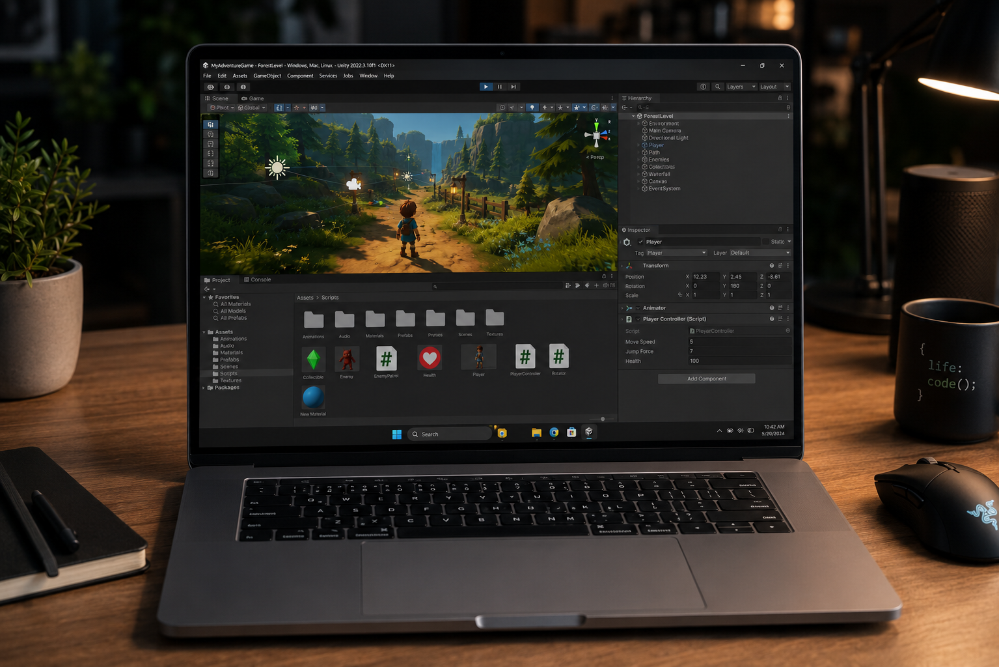

Image generated using ChatGpt (OpenAI), July 2026.
Projects I have Worked on
My coursework has allowed me to practice programming, webpage development, database design, and problem-solving. Each project has helped me become more comfortable using technology and devloping projects.
Examples of my work
- Python programming assignments
- Database design projects
- HTML webpage development
- Software troubleshooting activites
Visit GitHub to learn more about sharing and managing software projects.